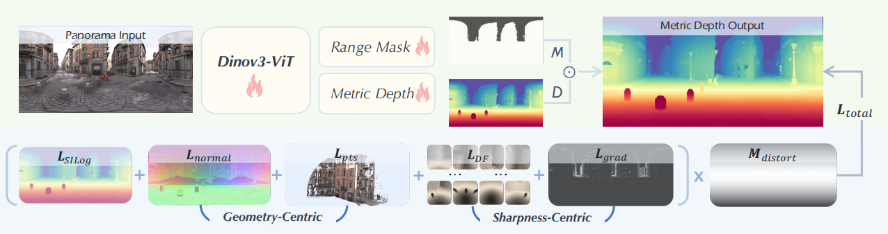
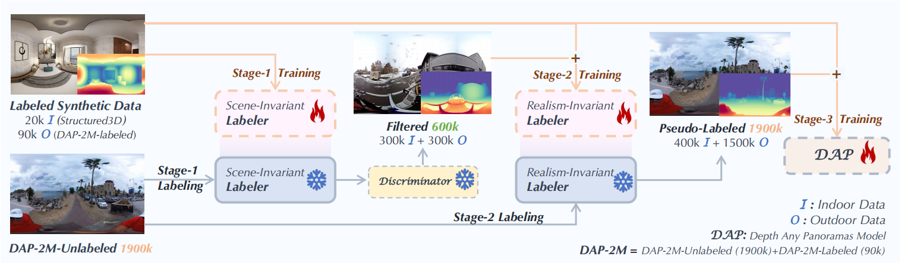
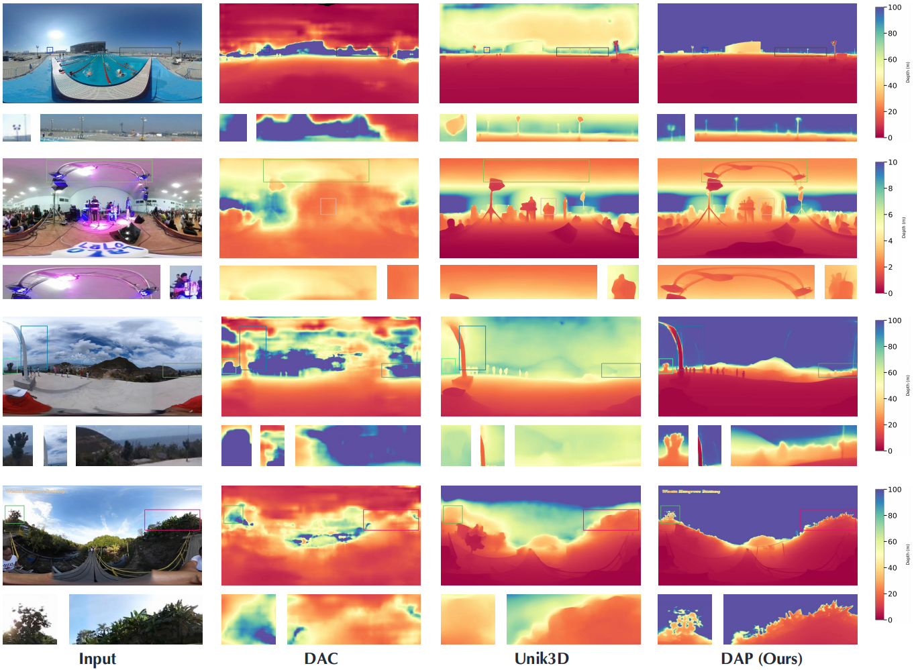
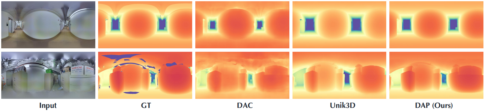

Qualitative Evaluation
Comparison On Outdoor Scenes (Video)
Comparison On Outdoor Scenes (Image)
Comparison On Indoor Scenes
Comparison On Fine-Grained Details
Comparison On Robustness
Comparison On Scenes With Human
Comparison On Scale Ability
In this work, we present a panoramic metric depth foundation model that generalizes across diverse scene distances. We explore a data-in-the-loop paradigm from the view of both data construction and framework design. We collect a large-scale dataset by combining public datasets, high-quality synthetic data from our UE5 simulator and text-to-image models, and real panoramic images from the web. To reduce domain gaps between indoor/outdoor and synthetic/real data, we introduce a three-stage pseudo-label curation pipeline to generate reliable ground truth for unlabeled images. For the model, we adopt DINOv3-Large as the backbone for its strong pre-trained generalization, and introduce a plug-and-play range mask head, sharpness-centric optimization, and geometry-centric optimization to improve robustness to varying distances and enforce geometric consistency across views. Experiments on multiple benchmarks (e.g., Stanford2D3D, Matterport3D, and Deep360) demonstrate strong performance and zero-shot generalization, with particularly robust and stable metric predictions in diverse real-world scenes. .
Methodology

Overview of the proposed progressive three-stage pipeline.
Stage 1 trains a Scene-Invariant Labeler on high-quality synthetic indoor and outdoor data
to provide strong initialization. Stage 2 introduces a Realism-Invariant Labeler,
where a PatchGAN-based discriminator selects 300K indoor and 300K outdoor high-confidence pseudo-labeled
samples to mitigate domain gaps between synthetic and real data. Stage 3 performs DAP training
on all labeled and pseudo-labeled data, enabling large-scale semi-supervised learning and strong generalization
across real-world panoramic scenes.

Architecture of the proposed DAP network.
Built upon DINOv3-Large as the visual backbone, our model adopts a distortion-aware depth decoder
and a plug-and-play range mask head for adaptive distance control across diverse scenes.
Training is guided by multi-level geometric and sharpness-aware losses, including
LSILog, LDF, Lgrad, Lnormal, and Lpts, ensuring metric accuracy,
edge fidelity, and geometric consistency in panoramic depth estimation.
Qualitative Evaluation


Citation
@article{lin2025dap,
title={Depth Any Panoramas: A Foundation Model for Panoramic Depth Estimation},
author={Lin, Xin and Song, Meixi and Zhang, Dizhe and Lu, Wenxuan and Li, Haodong and Du, Bo and Yang, Ming-Hsuan and Nguyen, Truong and Qi, Lu},
journal={arXiv},
year={2025}
}